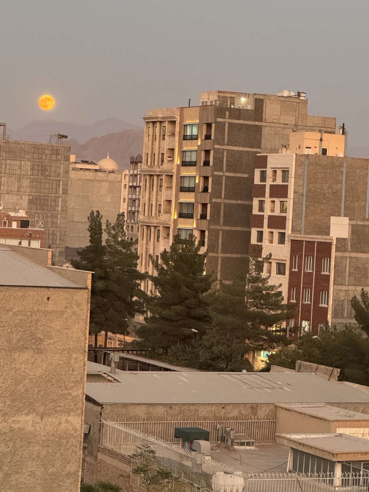

Kerman, 2024
A full moon rising over the rooftops of Kerman, Iran, photographed in 2024. The warm evening light falls across the residential buildings while the mountains recede into the background.

A full moon rising over the rooftops of Kerman, Iran, photographed in 2024. The warm evening light falls across the residential buildings while the mountains recede into the background.